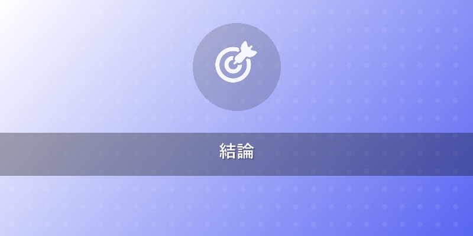
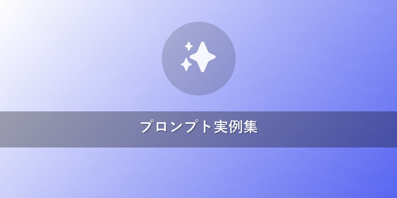
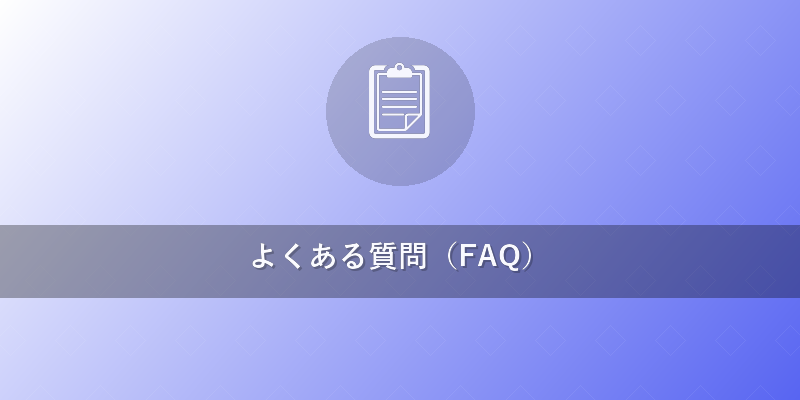

2026年版Midjourney使い方！超初心者ガイドと最新プロンプト術
この記事でわかること
- 2026年最新のMidjourneyアカウント登録からWeb版の利用開始まで、具体的なステップがわかります。
- プロが使うプロンプトの組み立て方、コピペで使えるテンプレート、パラメータ設定のコツを習得できます。
- Midjourneyで生成した画像の商用利用ルール、著作権、そして競合AIツールとの比較まで網羅的に理解できます。

結論
Midjourneyは、2026年には完全に統合されたWeb版UIとDiscordを併用することで、AI画像生成がこれまで以上に直感的かつパワフルになっています。初心者でもわずか数ステップで始められ、高度なプロンプト技術を習得すれば、あなたの創造性を無限に広げる高品質な画像を生成可能です。最新の機能とコツを掴み、あなたもAIアートの世界へ飛び込みましょう。
本題
1. Midjourneyを始める第一歩：アカウント作成とプラン選択
Midjourneyの利用開始は、非常にシンプルです。まずはDiscordアカウントが必須となります。Discordアカウントをお持ちでない場合は、事前に作成しておきましょう。
- Midjourney Discordサーバーに参加: Midjourney公式サイト（https://www.midjourney.com/）から「Join the Beta」をクリックし、公式Discordサーバーに参加します。
- プランを選択: Discordサーバー内の任意の
#newbieチャンネル、またはDMで/subscribeコマンドを入力します。表示されるリンクからMidjourneyのWebサイトにアクセスし、Basic、Standard、Pro、Megaのいずれかの有料プランを選択して購読します。無料トライアルは現在提供されていません。商用利用には有料プランの契約が必須です。 - Web版へのアクセス: 2026年にはWeb版UIが本格的に展開されており、Discordだけでなく、MidjourneyのWebサイトからも直接画像を生成・管理できるようになりました。Discordに慣れていない初心者の方には、より直感的で視覚的にわかりやすいWeb版からの利用がおすすめです。Web版では、プロンプトの入力補助機能や、過去の生成画像の整理・検索機能が強化されています。
2. 基本コマンドとプロンプトの組み立て方：美しさを引き出す呪文
Midjourneyで画像を生成する際の核となるのが「プロンプト」（呪文）です。効果的なプロンプトは、あなたのアイデアを正確にAIに伝え、望み通りの画像を生成するための鍵となります。
基本コマンド /imagine: DiscordまたはWeb版のプロンプト入力欄に/imagineと入力し、続けてあなたのイメージを英語で記述します。日本語でプロンプトを入力したい場合は、後述のQ&Aセクションをご確認ください。
プロンプトの基本構造: 効果的なプロンプトは、以下の要素を組み合わせることで構成されます。
[主題], [詳細な描写], [スタイル/画風], [雰囲気/感情], [補足情報], [パラメータ]
プロンプト例（シンプル版）:
/imagine a sleek futuristic sports car, high-speed chase on a neon-lit city street at night, cinematic lighting, dramatic angle, reflections, photorealistic --ar 16:9
主要パラメータの活用:
- --ar (aspect ratio): 画像のアスペクト比を指定します（例: --ar 16:9、--ar 3:2）。
- --v (version): 使用するMidjourneyのモデルバージョンを指定します。2026年時点では最新バージョンがデフォルトで適用されますが、特定のスタイルを求める場合は旧バージョンも指定可能です。
- --style (スタイル): 特定のスタイルや美学を適用します（例: --style raw、--style zen）。
- --sref (style reference): 参照画像からスタイルを抽出して適用します。これはWeb版で特に使いやすくなっています。
- --seed (シード値): 生成される画像の初期ノイズパターンを固定します。似た画像を複数生成したい場合に便利です。
- --chaos (カオス): 結果の多様性（ランダム性）を調整します（0-100）。
- --cref (character reference): キャラクターの見た目を参照画像から維持します。{{internal_link:Midjourneyでキャラクターを統一する方法}}も参考にしてください。
これらのパラメータを組み合わせることで、より詳細なイメージをAIに伝えることができます。Web版では、これらのパラメータをGUIで簡単に設定できるようになっています。
3. プロの技！Midjourney Web版とDiscordの使いこなし術
2026年現在、MidjourneyはWeb版とDiscordのそれぞれの強みを活かすことで、さらに効率的な画像生成が可能です。
Midjourney Web版の活用: Web版は、プロンプトの直感的な入力、生成画像のギャラリー表示、過去のプロンプトの管理、コレクション作成に最適です。特に、プロンプトの自動生成アシスタントや、--sref, --crefなどの画像参照機能を視覚的に操作できる点は大きなメリットです。あなたのライブラリはWeb版で一元管理され、キーワード検索やフィルター機能で過去の作品を素早く見つけることができます。
Discordの効率的な使い方: Discordは、リアルタイムでの画像生成、新しい機能のテスト、コミュニティとの交流に引き続き重要です。
- プライベート生成: 自分のDMやプライベートサーバーでMidjourney Botを招待すれば、他のユーザーに見られることなく画像を生成できます（Standardプラン以上）。
- Upscale (Uボタン) と Variations (Vボタン): 生成された4枚の画像から、Uボタンで特定の画像を拡大・高解像度化、Vボタンで選択した画像のバリエーションを生成します。
- Remixモード: プロンプトやパラメータの一部を変更してバリエーションを生成する強力な機能です。/settingsコマンドでRemixモードを有効にできます。
- Pan, Zoom, Vary (Strong/Subtle): Web版、Discordともに、生成された画像をさらに拡大、左右上下に拡張、または僅かに変化させることで、クリエイティブな編集が可能です。{{internal_link:Midjourneyの画像編集テクニック}}で詳細を確認しましょう。

プロンプト実例集
コピペで使えるプロンプトテンプレートをいくつか紹介します。ぜひこれらを参考に、あなた自身のアイデアを加えてみてください。
-
ファンタジー風景:
/imagine A mystical forest with glowing bioluminescent flora, ancient ruins covered in moss, a shimmering river under a twilight sky, ethereal light, highly detailed, fantasy art, volumetric lighting --ar 16:9 --style raw -
サイバーパンク都市:
/imagine A bustling cyberpunk metropolis at night, towering skyscrapers adorned with neon signs, flying vehicles, rain-slicked streets, vibrant colors, cinematic, high contrast, by Syd Mead and Katsuhiro Otomo --ar 3:2 -
ポップアートポートレート:
/imagine A vibrant pop art portrait of a young woman, bold primary colors, halftone dots, thick outlines, comic book style, inspired by Roy Lichtenstein, dynamic composition --ar 2:3 -
写真風プロダクトショット:
/imagine A minimalist product shot of a high-tech smart speaker on a clean white pedestal, soft studio lighting, shallow depth of field, subtle reflections, crisp details, photorealistic --ar 1:1 --style photography
他のAI画像生成ツールとの比較
Midjourneyと主要な競合ツールを比較し、それぞれの特徴を理解しましょう。
| ツール名 | 強み | 弱み | 特徴 | 利用形式 | 費用 | 商用利用 |
|---|---|---|---|---|---|---|
| Midjourney | 高品質な芸術的表現、直感的なWeb版UI（2026） | リアルな人物描写がやや苦手な場合あり | 独特の美的センス、Discord/Web連携、活発なコミュニティ | Discord/Web | 有料 | 有料プラン必須 |
| Flux | 高解像度、細部の忠実な再現、高いカスタマイズ性 | 学習コストがやや高い | 画像と動画生成、多機能な編集オプション | Web | 一部無料/有料 | 可能 |
| DALL-E 3 (OpenAI) | 自然言語理解、直感的プロンプト、画像編集機能 | 芸術的な表現の幅はMidjourneyに劣る | ChatGPT連携、著作権に配慮した生成 | Web (ChatGPT連携) | 有料クレジット | 可能 |
| Stable Diffusion | 高い自由度、オープンソース、多様なモデル | 高度な設定には専門知識が必要 | ローカル実行可、多数の派生モデル・UIが存在 | ローカル/Web | 無料/有料 | 基本的に自由 |
| Adobe Firefly | Creative Cloud連携、著作権クリアな素材提供 | 生成速度、創造性の自由度がやや低い | 画像加工・編集ツールとの連携、著作権保護 | Web | 有料 (CC契約) | 可能 |

よくある質問（FAQ）
Q1: Midjourneyは無料で使えますか？
A1: 2026年現在、Midjourneyの無料トライアルは基本的に提供されていません。画像を生成するには、いずれかの有料サブスクリプションプランに登録する必要があります。これにより、より安定したサービス提供と、商用利用の権利が保証されます。
Q2: 商用利用は可能ですか？著作権はどうなりますか？
A2: はい、有料プランに加入していれば、生成した画像を商用利用することが可能です。生成画像の著作権は基本的に生成者に帰属するとされていますが、既存の著作物（キャラクター、ブランドロゴなど）に酷似した画像を生成・使用する場合は、法的な問題が生じる可能性もあります。ご自身の責任において、利用規約をよく確認し、適切な利用を心がけましょう。
Q3: プロンプトは日本語でも使えますか？
A3: Midjourneyのプロンプトは基本的に英語で入力することが推奨されています。日本語のプロンプトも認識はされますが、精度が落ちる可能性があります。より正確な画像を生成するためには、日本語のアイデアをChatGPTなどの翻訳ツールで英語に翻訳してから使用することをおすすめします。
おすすめサービス・ツール
この記事で紹介した内容を実践するために、以下のサービスがおすすめです。
- Midjourney - Midjourneyに登録する
- Amazon - AmazonでAI画像生成関連書籍を探す
- 楽天ブックス - 楽天でAI画像生成関連書籍を探す
※ 上記リンクからご利用いただくと、サイト運営の支援になります。
まとめ
Midjourneyは、2026年においてもAI画像生成の最前線を走り続けており、Web版の本格的な展開により、初心者からプロまで誰もが手軽に高品質なAIアートを創作できる環境が整いました。本記事で紹介した使い方、プロンプトのコツ、そして他ツールとの比較を参考に、ぜひあなたもMidjourneyの世界に飛び込んでみてください。無限の創造性が、あなたの指先で待っています。さあ、今すぐ最初の画像を生成してみましょう！